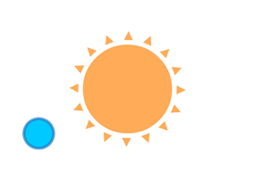
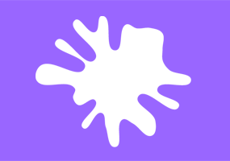

Two.js is a two-dimensional drawing api geared towards modern web browsers. It is renderer agnostic enabling the same api to draw in multiple contexts: svg, canvas, and webgl.
Download
Development Version
Uncompressed with comments about 128kb
Production Version
Minified using Closure Compiler about 50kb
Two.js requires Underscore.js and Backbone.js Events. If you're already loading these files elsewhere then you can build the project yourself and get the file size even smaller. For more information on custom builds check out the source on github.
Overview
-
Focus on Vector Shapes
Two.js is deeply inspired by flat motion graphics. As a result, two.js aims to make the creation and animation of flat shapes easier and more concise. At the time of this writing two.js unfortunately does not support text or images.
-
Scenegraph
At it's core two.js relies on a scenegraph. This means that when you draw or create an object (a
Two.PolygonorTwo.Group), two actually stores and remembers that. After you make the object you can apply any number of operations to it — e.g:rotation,translation,scale, etc.. -
Animation Loop
Two.js has a built in animation loop. It is simple in nature and can be automated or paired with another animation library. For more information check out the examples.
-
SVG Interpreter
Two.js features a
Scalable Vector Graphics Interpreter. This means developers and designers alike can create SVG elements in commercial applications like Adobe Illustrator and bring them into your two.js scene. For more information check out the examples.
Basic Usage
In order to start any of these demos you'll want to download two.js and add it to your <html> document. Once downloaded add this tag to the <head> of your document: <script src="./path-to-two/two.js"></script>. When you visit the page, you should be able to open up the console and type Two. If this returns a function then you're ready to begin!
Drawing Your First Shapes
Before we get into all the fancy animating its good to get a feel for how to make shapes in two.js. In order to do this we need to have an instance of two. This sets up a dom element that contains either an svg or canvas element to add to the webpage. The two object has a scene which holds all shapes as well as methods for creating shapes.
For a list of all properties and construction parameters check out the documentation.
Shapes and Groups
Adding shapes to groups makes managing multiple shapes easier and more sane. Group's provide an easy way to move your content through translation, rotation, and scale. These operations emit from the coordinate space (0, 0). In the example below we can see that the initial orientation of the circle and rectangle changed from the first example. These shapes are oriented around (0, 0), which allows us to transform the group around the center of the shapes. In addition Group's styling operations trickle down and apply to each shape.
All rendered objects in two.js are a child of a group. Every two instance has a property scene. This property is a root-level Two.Group and can act as a camera through the same transformations described above.
Adding Motion
Finally, let's add some motion to our shapes. So far the examples use two.update(); to draw content to the screen. The instance of two.js has two particular methods for animation. The first is two.play(); which calls two.update(); at 60fps. This rate, however, will slowdown if there's too much content to render per frame.
The second method is two.bind(); This method takes a string as it's first parameter indicating what event to listen to and a function as it's second argument delineating what to do when the event described in the first parameter happens. To sync a function with the animation loop simply invoke two.bind('update', referenceToFunction); as outlined below:
For a complete list of events that can be bound to an instance of two check out the documentation.
Examples
-

Depth via Groups
-

Animate Strokes
-

3rd Party Animation
-

Morph Vertices
-

Rendering Types
-

Interpret SVG's
Documentation
Two
-
When you import the projectTwo is a
windowlevel class that serves as the main interaction point for the project. It exposes a number of methods and properties. These make it possible to draw, but also afford other capabilities such as augmenting the drawing space. Unless specified methods return an instance oftwofor the purpose of chaining. -
construction
var two = new Two(params);Create a new instance of
Twowhereparamsis a JavaScript object with several optional parameters listed below:-
type
params.typeSet the type of renderer for the instance: svg, webgl, canvas, etc.. Applicable types are carried within
Two.Types. Default type isTwo.Types.svg. -
width
params.widthSet the width of the drawing space. Disregarded if
params.fullscreenis set totrue. Default width is640pixels. -
height
params.heightSet the height of the drawing space. Disregarded if
params.fullscreenis set totrue. Default height is480pixels. -
autostart
params.autostartA boolean to automatically add the instance to draw on
requestAnimationFrame. This is a convenient substitute so you don't have to calltwo.play(). -
fullscreen
params.fullscreenA boolean to set the drawing space of the instance to be fullscreen or not. If set to
truethenwidthandheightparameters will not be respected.
-
-
type
two.typeA string representing which type of renderer the instance has implored.
-
frameCount
two.frameCountA number representing how many frames have elapsed.
-
width
two.widthThe width of the instance's dom element.
-
height
two.heightThe height of the instance's dom element.
-
playing
two.playingA boolean representing whether or not the instance is being updated through the automatic
requestAnimationFrame. -
renderer
two.rendererThe instantiated rendering class for the instance. For a list of possible rendering types check out
Two.Types. -
scene
two.sceneThe base level
Two.Groupwhich houses all objects for the instance. Because it is aTwo.Grouptransformations can be applied to it that will affect all objects in the instance. This is handy as a makeshift camera. -
appendTo
two.appendTo(domElement);A convenient method to append the instance's dom element to the page. It's required to add the instance's dom element to the page in order to see anything drawn.
-
play
two.play();This method adds the instance to the
requestAnimationFrameloop. In affect enabling animation for this instance. -
pause
two.pause();This method removes the instance from the
requestAnimationFrameloop. In affect halting animation for this instance. -
update
two.update();This method updates the dimensions of the drawing space, increments the
tickfor animation, and finally callstwo.render(). When using the built-inrequestAnimationFramehook,two.play(), this method is invoked for you automatically. -
render
two.render();This method makes the instance's renderer draw. It should be unnecessary to inoke this yourself at anytime.
-
add
two.add(objects);Add one or many shapes / groups to the instance. Objects can be added as arguments,
two.add(o1, o2, oN), or as an array depicted above. -
makeLine
two.makeLine(x1, y1, x2, y2);Draws a line between two coordinates to the instance's drawing space where
x1,y1are the x, y values for the first coordinate andx2,y2are the x, y values for the second coordinate. It returns aTwo.Polygonobject. -
makeRectangle
two.makeRectangle(x, y, width, height);Draws a rectangle to the instance's drawing space where
x,yare the x, y values for the center point of the rectangle andwidth,heightrepresents the width and height of the rectangle. It returns aTwo.Polygonobject. -
makeCircle
two.makeCircle(x, y, radius);Draws a circle to the instance's drawing space where
x,yare the x, y values for the center point of the circle andradiusis the radius of the circle. It returns aTwo.Polygonobject. -
makeEllipse
two.makeEllipse(x, y, width, height);Draws an ellipse to the instance's drawing space where
x,yare the x, y values for the center point of the ellipse andwidth,heightare the dimensions of the ellipse. It returns aTwo.Polygonobject. -
makeCurve
two.makeCurve(x1, y1, x2, y2, xN, yN, open);Draws a curved polygon to the instance's drawing space. The arguments are a little tricky. It returns a
Two.Polygonobject.The method accepts any amount of paired x, y values as denoted by the series above. It then checks to see if there is a final argument, a boolean
open, which marks whether or not the shape should be open. Iftruethe curve will have two clear endpoints, otherwise it will be closed.This method also recognizes the format
two.makeCurve(points, open)where points is an array ofTwo.Vector's and open is an optional boolean describing whether or not to expose endpoints. It is imperative if you generate curves this way to make the list of pointsTwo.Vector's. -
makePolygon
two.makePolygon(x1, y1, x2, y2, xN, yN, open);Draws a polygon to the instance's drawing space. The arguments are a little tricky. It returns a
Two.Polygonobject.The method accepts any amount of paired x, y values as denoted by the series above. It then checks to see if there is a final argument, a boolean
open, which marks whether or not the shape should be open. Iftruethe polygon will have two clear endpoints, otherwise it will be closed.This method also recognizes the format
two.makePolygon(points, open)where points is an array ofTwo.Vector's and open is an optional boolean describing whether or not to expose endpoints. It is imperative if you generate curves this way to make the list of pointsTwo.Vector's.The
Two.Polygonthat this method creates is the base shape for all of the make functions. -
makeGroup
two.makeGroup(objects);Adds a group to the instance's drawing space. While a group does not have any visible features when rendered it allows for nested transformations on shapes. See
Two.Groupfor more information. It accepts an array of objects,Two.Polygons orTwo.Groups. As well as a list of objects as the arguments,two.makeGroup(o1, o2, oN). It returns aTwo.Groupobject. -
interpret
two.interpret(svgNode);Reads an svg node and draws the svg object by creating
Two.Polygons andTwo.Groups from the reference. It then adds it to the instance's drawing space. It returns anTwo.Groupobject.At the time of writing,
two.interpretaccepts compound paths, but often has unexpected results. Therefore it is recommended to break apart and Release Compound Paths as much as possible. -
bind
two.bind(event, callback);Bind an event, string, to a callback function. Passing
"all"will bind the callback to all events. Inherited from Backbone.js. -
unbind
two.unbind(event, callback);Remove one or many callback functions. If callback is
nullit removes all callbacks for an event. If the event name is null, all callback functions for the instance are removed. This is highly discouraged. Inherited from Backbone.js. -
Array
Two.ArrayA JavaScript
Float32Arraywith graceful fallback to JavaScriptArray. -
Types
Two.TypesA list of applicable types of rendering contexts. This is used to standardize the addresses of the various renderers. The types include
svg,canvas, andwebgl. e.g:Two.Types.svg -
Properties
Two.PropertiesA list of renderer specific application properties.
-
Events
Two.EventsA list of actionable events triggered by a given instance. For the most part these are internal events in order to enable two-way databinding. Exceptions include
updateevent on animation loop andresizewhen the dimensions of the drawing space change. Related totwo.bindandtwo.trigger. -
Resolution
Two.ResolutionA number representing how many subdivisions should be present during curve calculations.
-
Instances
Two.InstancesA running list of all instances created on the page.
-
noConflict
Two.noConflict();Run two.js in
noConflictmode, returning thetwovariable to its previous owner. Returns a reference to theTwoclass. -
Utils
Two.UtilsA collection of utility functions and variables used throughout the project. This is where much of the algorithmic computation lies: computing curve handles, subdividing cubic bezier curves, interpretting svg nodes. Because of it's complexity it's encouraged to look at the source code for further information.
-
Error
Two.Error(message);A two.js specific custom error handler. Takes a message, string, to display in the console to developers.